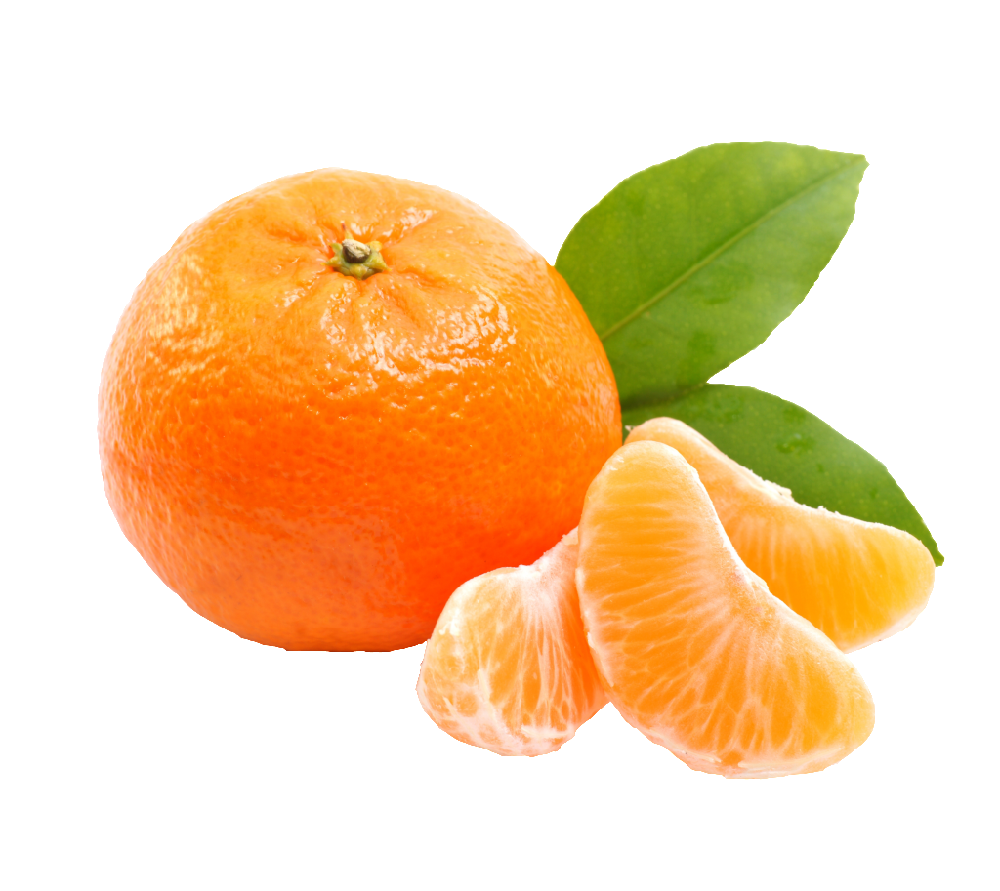

Contatos Click
 Abacaxi
Abacaxi Amendoin
Amendoin Açai
Açai Blue-Ice
Blue-Ice Coco-Branco
Coco-Branco chiclete-(Tut-Frut)
chiclete-(Tut-Frut) Chocolate
Chocolate  Chocolate-branco
Chocolate-branco  Doce de Leite
Doce de Leite Goiaba
Goiaba- Groselha
- Leitinho
- Limão
 Leite condensado
Leite condensado- Melancia
 Morango
Morango- Milho-Verde
 Maracujá
Maracujá  Maçã-Verde
Maçã-Verde Nata
Nata -  Tangerina
 Uva
Uva  Pinta-Lingua
Pinta-Lingua
Vitaminas do Abacaxi
O abacaxi é uma fruta rica
em vitaminas e minerais essenciais para a saúde. Aqui estão algumas das vitaminas que o abacaxi
contém :
- Vitamina A: importante para a saúde da visão e combate aos radicais livres que causam
envelhecimento.
- Vitamina C: fundamental
para o sistema imunológico, ajudando a prevenir infecções e doenças cardiovasculares. Uma fatia de
100g de abacaxi fornece cerca de 80% da ingestão diária recomendada de vitamina C.
Vitamina B: inclui várias
vitaminas do complexo B, como:
- Vitamina B6: importante para o funcionamento do sistema neurológico e produção de glóbulos
vermelhos (0,1 mg por 100g de abacaxi).
- Folato: essencial para a
produção de células sanguíneas e prevenção de defeitos congênitos (18 mcg por 100g de abacaxi).
- Potássio: ajuda a regular
a pressão arterial e manter a saúde cardiovascular.
- Magnésio: importante para
o relaxamento muscular e funcionamento do sistema nervoso.
- Cálcio: essencial para a
saúde óssea.
- Ferro: importante para a
produção de glóbulos vermelhos
- Manganês: essencial para a
saúde óssea e absorção de cálcio.
Vitaminas do Amendoin
 -
Vitamina E: importante para a saúde celular e antioxidante
-
Vitamina E: importante para a saúde celular e antioxidante
 -
Vitamina B3 (Niacina): ajuda no metabolismo energético e na saúde da pele
-
Vitamina B3 (Niacina): ajuda no metabolismo energético e na saúde da pele
 -
Vitamina B1 (Tiamina): importante para o metabolismo de carboidratos
-
Vitamina B1 (Tiamina): importante para o metabolismo de carboidratos
 -
Vitamina B6: ajuda no funcionamento do sistema nervoso e na produção de glóbulos vermelhos.
-
Vitamina B6: ajuda no funcionamento do sistema nervoso e na produção de glóbulos vermelhos.
 -
Folato: essencial para a produção de células sanguíneas.
-
Folato: essencial para a produção de células sanguíneas.
 -
Magnésio: importante para a saúde óssea e muscular.
-
Magnésio: importante para a saúde óssea e muscular.
 -
Fósforo: essencial para a saúde óssea.
-
Fósforo: essencial para a saúde óssea.
 -
Potássio: ajuda a regular a pressão arterial.
-
Potássio: ajuda a regular a pressão arterial.
 Curiosidade
O amendoin é uma fonte de gorduras saudáveis (principalmente monoinsaturadas e poliinsaturadas)
e
proteínas, sendo uma boa opção para uma alimentação balanceada.
Curiosidade
O amendoin é uma fonte de gorduras saudáveis (principalmente monoinsaturadas e poliinsaturadas)
e
proteínas, sendo uma boa opção para uma alimentação balanceada.
Vitaminas do açai
 - Vitaminas e Minerais
- Vitaminas e Minerais
 - Vitamina A: 15 µg por 100g de polpa de açaí
- Vitamina A: 15 µg por 100g de polpa de açaí
 - Cálcio: 18 mg por 100g
- Cálcio: 18 mg por 100g
 - Ferro: 0,6 mg por 100g
- Ferro: 0,6 mg por 100g
 - Outros Nutrientes Importantes
- Outros Nutrientes Importantes
 - Gorduras saudáveis: O açaí é rico em gorduras monoinsaturadas e
poli-insaturadas
- Gorduras saudáveis: O açaí é rico em gorduras monoinsaturadas e
poli-insaturadas
 - Fibras: 4g por 100g de polpa de açaí
- Fibras: 4g por 100g de polpa de açaí
 - Antioxidantes: Especialmente antocianinas, responsáveis pela cor
roxa do
açaí
- Antioxidantes: Especialmente antocianinas, responsáveis pela cor
roxa do
açaí